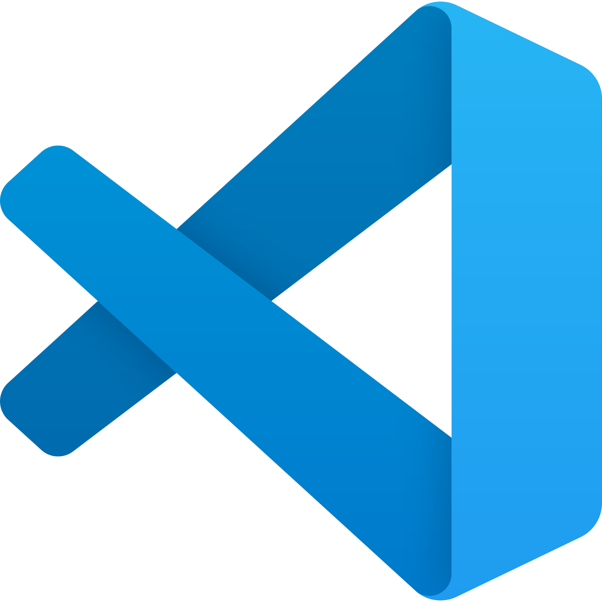

Mis on CASE vahendid?
Tarkvaraarenduse elutsükkel koosneb erinevatest etappidest, milles tehtavad tegevused on väga erinevad,
kuid igas etapis on siiski arendatava tarkvara jaoks vajalikud tegevused.
Need tegevused lahendatakse või tehakse ära tööriistadega, mida nimetatakse (inglise keeles CASE-vahenditeks)
tarkvara raaltehnoloogiaks.
CASE-vahend?
Case on akronüüm inglise keelsest terminist "Computer-Aided Software Engineering".Kuidas CASE-vahendeid kasutatakse?
CASE-vahend on kasutusel erinevates etappides ja lubab ära teha arendajal tegevusi nagu nõuete analüüs,
erinevate protsesside voolu kujundamine, ajakava seadmine, dokumentatsiooni genereerimine, versiooni
haldus(olgu siis kas dokumentatsioonile endale või arendatavale tarkvarale), arendustöö teostamine,
arendusmeeskonna ja arendustöö enda organiseerimine, prototüübi genereerimine jpm.
Sellel eesmärgil kategoriseeritaksegi CASE-vahendid kahte peamisesse kategooriasse.
CASE-vahendid lubavad teha ära kas mingi ühe tegevuse või otsast-otsani arendustööd. Enamus Case-vahendeid
integreerib endas ka mitme erineva etapi või mõlema taseme tööriistu.
Näide kuidas arendusmudelis X CASE-vahendeid rakendada saaks ning nende tööriistade lühikirjeldus
Spiraalne arendusmudel
See arendusmudel hõlmab kordusi, kus iga kordus algab eesmärkide uurimise, nõuete kirjeldamisega,riskidehindamisega ning järgmiste sammude kavandamisega. Spiraalne arendusmudel omab endas järgmisi samme:
| Arendusmudeli samm | Sammus tehtavad tööd | Vastav CASE-vahend | CASE vahendi kirjeldus |
|---|---|---|---|
| Eesmärkide seadmine |
|
Jira |
Platvorm tööde planeerimiseks ja korraldamiseks. Kogu protsess on ajas jälgitav. |
| Riskide hindamine ja maandus |
|
Visual Studio Code  |
Platvorm koodi kirjutamiseks, prototüübi loomine riskide maandamiseks. |
| Arendus ja valideerimine |
|
|
|
| Planeerimine |
|
|
|
CASE-vahendid, mida olen kasutanud:
- GITHub
- Pycharm
- Jira
- Google Docs
- Google Sheet
- Google Slides
- Visual Studio
- Visual Studio Code
- Microsoft Word
- Microsoft Excel
- Microsoft Powerpoint
- Draw.io
CASE-vahendid